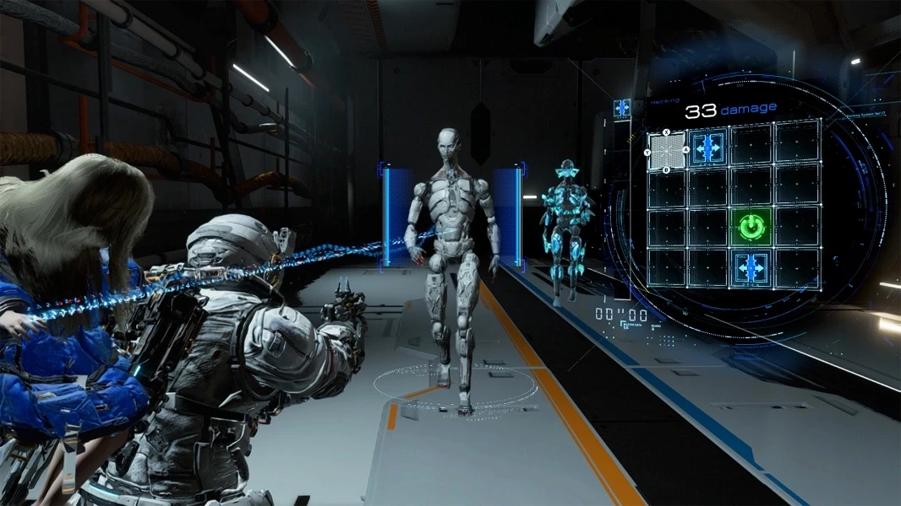

Miért játsz a Pragmatával
- Történet
- Gameplay
- Képek
- Linkek
A történet egy közeli, disztópikus jövőben játszódik, nagyrészt egy hatalmas holdi kutatóállomáson, a Cradle nevű létesítményben. Az állomást robotok népesítik be, amelyek egy ponton ellenségessé válnak. A holdrengés miatt IDUS az AI ami az egész Cradle-t irányitotta meghibásodott.
A főszereplő Hugh Williams, egy űrhajós/űrutazó, aki valamilyen küldetés során a holdi létesítményben reked. Itt találkozik Dianával, egy kislány külsejű androiddal.
robotkislány
Diana képes feltörni és manipulálni az állomás robotjait. Hugh pedig fegyverekkel harcol. A játék egyik központi ötlete, hogy a két szereplőnek szó szerint együtt kell működnie: Hugh támad, Diana pedig hackeli az ellenfeleket, hogy sebezhetővé tegye őket.
